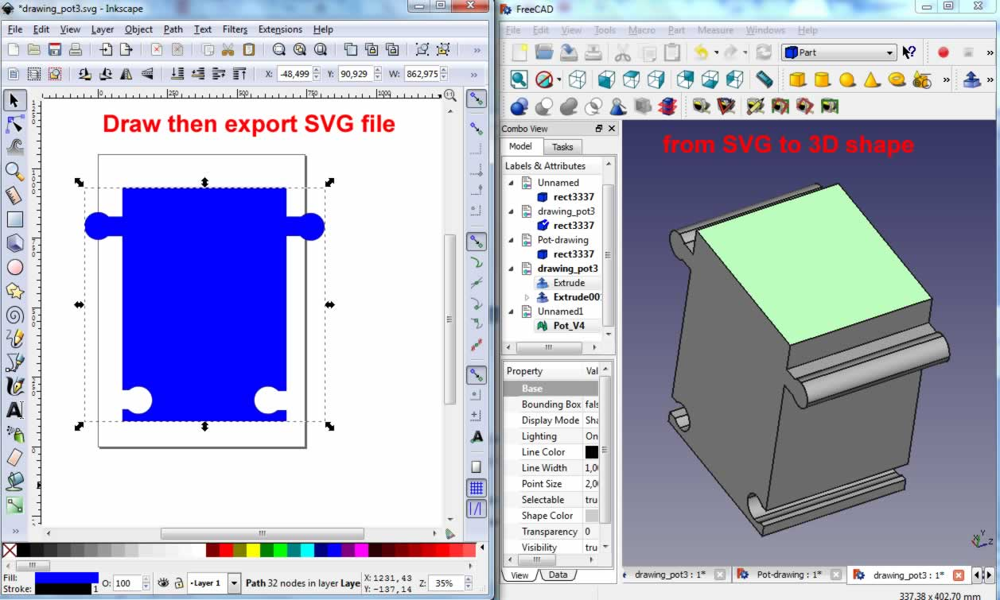
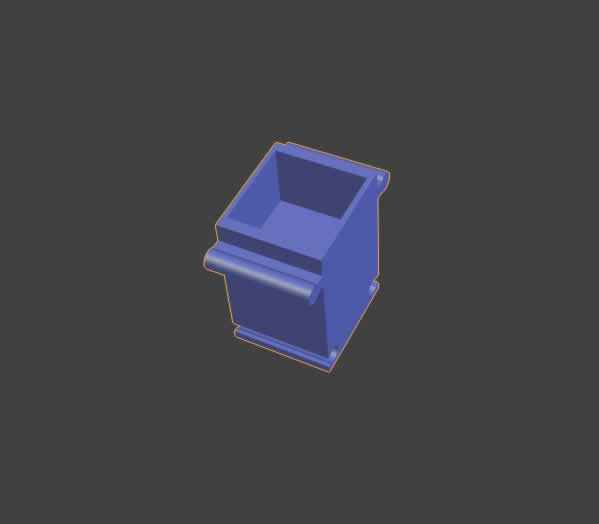

Activity 1: Pot Design
Starting from the following inspirational design of pots that I have found on the internet:

I started designing my pot since the beginning of the Fab Academy where I had developed the following initial design (see more details in week 2 work):
I started designing the shape of the pot and save it as SVG file. Using FreeCAD I import the SVG as geometry. I extrude the imported sketch in order to have the 3D model.
In order to create the empty space (the potting soil space), I draw another object that I extruded, then using a Boolean function helped me create the difference between the two solid 3D objects. I exported the 3D shape into STL file for further work and modifying with Blender.


After that, I tried to make many changes to this design shape using Rhino as I became more comfortable and expert using it. The objective is to make it nice, functional and modular where pots can be composed with each other in order to build a pot structure:
Download the stl file.
Activity 2: Pot Realization
In this point, I thought about which technique I can use in order to realize the pot. I evaluated the following ways:
In this work, I decided to proceed on this way:
• Obtain it from a piece of wood via the milling process and using CNC machine
• Molding and casting: prepare the mold using was or other material, then cast it using liquid ceramic materials and leave drying, then on the oven
• Divide it in many building blocks, design junctions between the blocks, and use the laser cutter in order to obtain the blocks
• 3D printing.
I was convinced to do it using the molding and casting technique, but I couldn’t find easily the ceramic materials as well as the high temperature furnace. Then I moved my choice to 3D printing as I’m convinced that it is the other techniques that will conserve the original design and respect dimensions for the modular features of the pot.
The following are the steps of 3D printing of the pots. I used the Sharebot 3D printer kindly provided by the University of Salento.
I printed a very small scale of the pot in order to check if it is as I have imagined, and if it respects the features.
Then I moved to 3D printing my pots for the project. I decided to make 3 objects in order to show the modular feature of the pots:
Finally I managed to print all the pot:
Download Zone
The design files are available for downloand here: